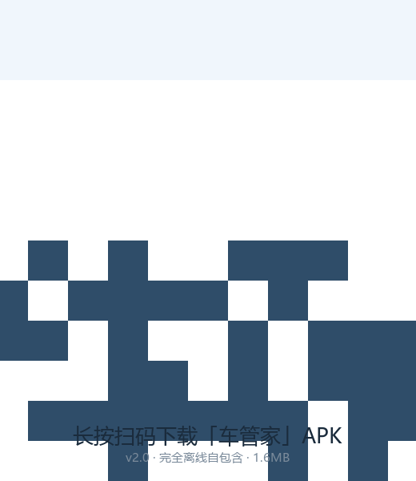

车管家 · 汽车维保记录
免费开源（MIT）· 数据仅存本机
汽车维修保养记录与智能提醒：双维度保养提醒、多车档案、维保凭证、养车成本统计。
📦 Android 安装包
完全离线自包含
——装完断网也能用，数据各存各手机。
⬇️ 下载 Android 安装包（v2.0 · 1.6MB）
网页版（PWA，也可直接用）
手机扫码直接下载：

安装提示：首次安装需允许「安装未知应用」；已装旧版可直接覆盖升级（本机数据不会自动迁移，请先备份）。
源码：
Gitee
·
GitHub
· 作者 keno王